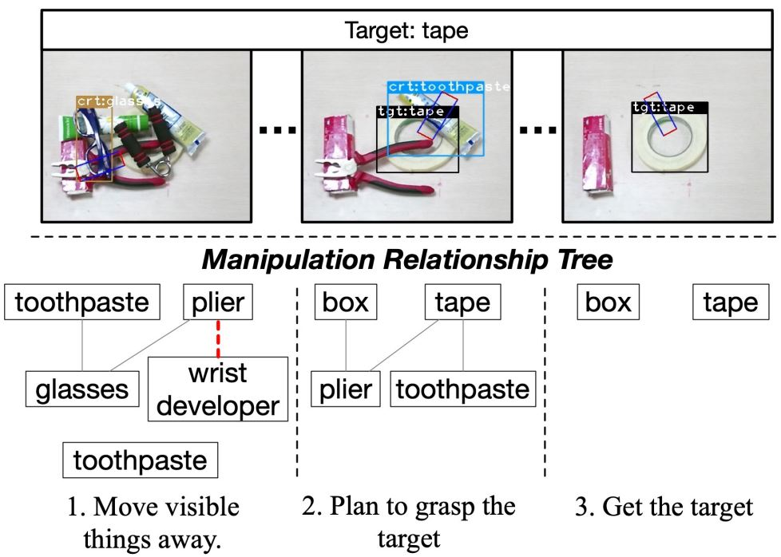
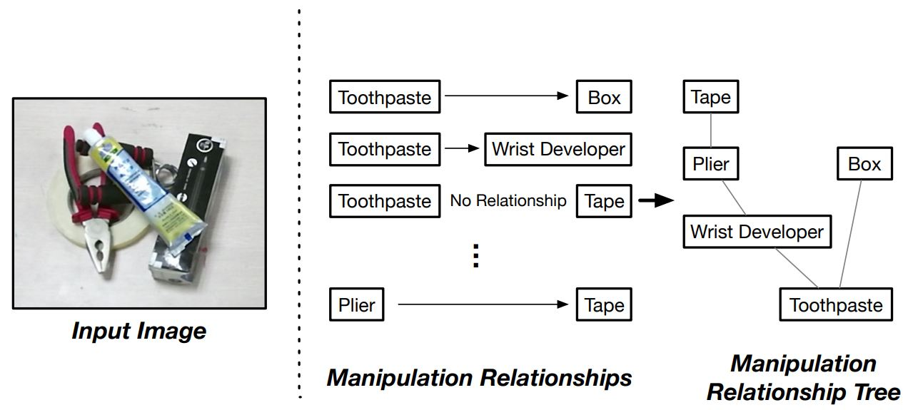

Deep Reinforcement LearningLocation: Institute of Artificial Intelligence and Robotics, XJTU Advisors: Xuguang Lan, Nanning Zheng; Collaborator: Hanbo Zhang
Hindsight Trust Region Policy OptimizationDuration: 07/01/2019-04/30/2020
This project aims at the performance of Reinforcement Learning agents in sparse-reward environments. It leverages the idea of Hindsight and the policy-based algorithm Trust Region Policy Optimization (TRPO). Hindsight refers to the algorithm’s ability to generalize learning from encountered samples to all across goal space, including ones not intended for the current task. Other than incorporating hindsight to TRPO, two techniques are proposed here: (1) QKL, a quadratic approximation to the KL divergence constraint on the trust region, leading to reduced variance in KL divergence estimation and improved stability in policy update; (2) Hindsight Goal Filtering (HGF), a filtering mechanism that selects conductive hindsight goals. Experiments also highlight the performance of HTRPO on various tasks.
1. Sparse Reward: Sparse reward means the agent is given a distinctively high reward only upon reaching the desired final goal state, provides the possibility to obviate designing a delicate reward mechanism. It also guarantees that the agent focuses on the intended task itself without any deviation. Though born with a simple form, sparse reward diminishes the chances for policy to converge, especially in the initial random exploration stage, since the agent can hardly get positive feedbacks.
2. Hindsight: Hindsight refers to the algorithm’s ability to learn from information across goals, including ones not intended for the current task. Take the robot arm end-effector reaching task as an example. Given a goal or target position g, the end-effector may not be able to reach it under some preliminary policy. Under the sparse reward mechanism, no reward is given at the moment, and this move would therefore become a waste for training. But it's important to notice that in general, the robot is learning to reach all target position in the physical space, not just the given goal; the only purpose for the given goal is to collect valid training samples in deep reinforcement learning. Thus, we can also use the position the end-effector actually reached as the hindsight goal g' so that this sample would be valid for training, and therefore, save a significant amount of extra sample collecting.
3. Trust Region Policy Optimization: Details can be found in this paper. The optimization problem can be written as follows:
4. HTRPO Optimization Problem: Starting from the optimization problem, (1) Rewrite the problem as an expectation form w.r.b. to goals; (2) Replace the goal of the sample-collecting policy with hindsight goal g' by using importance sampling; (3) Bound the trust region with Quadratic KL-divergence; (4) Discretize the problem with Weighted Importance Sampling. Details can be found in this paper. The optimization problem can be derived into the following form, and can be solved using Karush-Kuhn-Tucker (KKT) conditions.
5. Experiment Tasks: We evaluate HTRPO in various sparse reward tasks, including simple benchmarks, image-based Atari games, and simulated robot control. To be specific, HTRPO is tested in Bit Flipping, Empty Maze, Ms. Pac-Man, Fetch Reach, Fetch Push, Fetch Slide, Fetch Pick And Place, and Sawyer Reach. Demonstrations are shown below.
6. Results: Results show HTRPO’s strong generality to different kinds of tasks and policies, and its significant improvement in performance level.
Deep Reinforcement Learning Toolkit ImplementationDuration: 08/01/2019-05/30/2020
This project implements some main-stream deep reinforcement learning algorithms, currently including "Vanilla" Policy Gradient (PG), Natural Policy Gradient (NPG), Trust Region Policy Optimization (TRPO), Hindsight Experience Replay (HER), Hindsight Policy Gradient (HPG), and Remember and Forget for Experience Replay (ReF-ER). These algorithms are implemented on toy environments like Bit-flipping and Grid World.
1. "Vanilla" Policy Gradient (VPG): VPG mainly adopts the characteristics of the Policy Gradient algorithm, which is introduced in the classic "REINFORCE" algorithm proposed by Richard S. Sutton. VPG here adds the word "Vanilla" to its name mainly aims to defer from other policy gradient algorithms mentioned in this project. In order to be consistent with the Actor-Critic coding frame of this project, we manually add an extra "Critic", i.e. a value function for VPG, which also coordinates with the introduction on Open AI Spinning Up. To quote from the website, the gradient of the expected finite-horizon un-discounted return of the policy is therefore written as:
The policy gradient algorithm works by updating policy parameters via stochastic gradient ascent on policy performance:
Policy gradient implementations typically compute advantage function estimates based on the infinite-horizon discounted return, despite otherwise using the finite-horizon un-discounted policy gradient formula.
2. Natural Policy Gradient (NPG): NPG is proposed in a NeurIPS 2001 paper by Sham M. Kakade. The spotlight of NPG is that it combines natural gradient with policy gradient, bounds the updates with Fisher Information Matrices, and solves the problem by taylor expansion approximation and conjugate-gradient descent. Borrowed from Katerina Fragkiadaki's slides,
3. Trust Region Policy Optimization (TRPO): TRPO is proposed a NeurIPS 2015 paper by John Schulman. It is quite similar to NPG. The main difference is the way TRPO bound the update by TV-divergence, which is then approximated by KL-divergence. It also proves that TRPO converges monotonically as the updates increase. With the solving process similar to that of NPG, the optimization problem of TRPO is:
4. Hindsight Experience Replay (HER): HER is proposed a NeurIPS 2017 paper by Marcin Andrychowicz. The concept of "Hindsight" in deep reinforcement learning was proposed for the first time. HER construct a replay buffer to collect the hindsight data from past experiences, and incorporate it with value-based and off-policy deep RL algorithms like DQN and DDPG, which can be trained with data of any offline distribution.
5. Hindsight Policy Gradient (HPG): HPG proposed by Paulo Rauber in this ICLR 2019 paper extends Hindsight from off-policy to on-policy VPG. It formalizes the policy gradient with hindsight data by leveraging goal-conditioned policy gradient and importance sampling. The hindsight policy gradient is given in the following theorem.
6. Remember and Forget for Experience Replay (ReF-ER): ReF-ER is proposed in a ICML 2019 paper by Guido Novati. ReF-ER focuses on the quality of training data in the Experience Replay buffer in general ER methods. It filters out "good" training experiences by defining "near-policy" and "far-policy" and designs concrete mechanisms for policy updating and gradient clipping.extends Hindsight from off-policy to on-policy VPG. It formalizes the policy gradient with hindsight data by leveraging goal-conditioned policy gradient and importance sampling. The hindsight policy gradient is given in the following theorem.
Robot VisionLocation: Institute of Artificial Intelligence and Robotics, XJTU Advisors: Xuguang Lan, Nanning Zheng; Collaborators: Hanbo Zhang, Xinwen Zhou
In overlapping scenes, grasps of close or overlapped objects may intersect with each other, which triggers grasp detection error by attributing the labeled grasp intended for object A to its near object B. This project aims to improve the accuracy of grasp detection by regulating the affiliation between the grasps and their corresponding objects. The methodology is that we detect grasps from Region-of-Interest (ROI) features rather than the original scene image, and therefore build up the affiliations between grasps and objects. This project also contributes a dataset that include 5185 images, 17688 object instances that belong to 31 categories, and 100,000+ labeled grasps.
1. Novelty of ROI-based Grasp detection: ROI-based grasp detection (ROI-GD) considers the affiliation between the grasps and their corresponding objects in order to avoid detection error by attributing the labeled grasp to other incorrect objects, especially in object overlapping scenes. ROI-GD extract ROI features from raw object scene images and then detect grasps based on ROI features.
2. Grasp Dataset Demonstration:
3. Results Demonstration:
Robotic Grasping System with Visual Manipulation Relationship ReasoningDuration: 10/30/2018-03/28/2019

This project aims to construct a robust autonomous robotic grasping system that utilizes a single neural network to detect objects, grasps, and reason the visual manipulation relationship between objects. It allows the robot to grasp objects from top to bottom when overlapping or stacking occurs and therefore avoid collapses or falls, and enable the robot to find out the objects hidden under a pile. We concatenate a grasp detector and a visual manipulation relationship predictor together, which outputs firstly the current object to grasp in order to reach the target based on a relationship tree, and then the grasp configuration of this object. This project also contributes a dataset that include 5185 images, 17688 object instances that belong to 31 categories, and 51000 manipulation relationships.
1. Grasp Detection: The grasp detection phase basically follow the mechanism of the project "ROI-based Robotic Grasp Detection". It detects objects and grasps on ROI features and outputs their specified affiliations to ensure a higher grasp accuracy.
2. Visual Manipulation Relationship Reasoning: Visual Manipulation Relationship regulates the order of the objects to be grasped based on their visual demonstration of spatial relationship. Normally, the ones on top of others are to be grasped first. The relationship reasoning is realized by predicting whether there are overlapping between the objects detected using the Object Pairing Pooling Layer. After figuring out the relationship between each object pair, we can construct a relationship tree describing the relationships among all objects detected in the scene.

3. Dataset Demonstration:
Reimplementation of Deep Spatial Autoencoders on Baxter RobotDuration: 3/30/2019-05/30/2019
This project reimplements Deep Spatial Autoencoder (DSAE) proposed by Chelsea Finn in this paper on the Baxter Robot platform for the push task. The image data is collected by running Guided Policy Search (GPS) on the Baxter Robot Platform. The results of this project show that GPS does not work well on Baxter robot due to the lack of velocity variables and its control precision, and that DSAE is sensitive to the background noise of the images.
Machine Learning
Machine Learning Algorithms Toolkit Python & C++ ImplementationLocation: Home Collaborators: Myself Duration: 12/10/2020-current
This project implements classical machine learning algorithms from scratch in both Python and C++ without any ML frameworks like Pytorch or scikit-learn. It is currently under construction. More implementations are being added...
None at the moment...
Image Processing
Image Style Transfer: "Imaginary Singapore"Location: School of Computing, National University of Singapore Advisors: Ng Teck Khim Duration: 07/11/2018-08/02/2018
This project aims to offer a playful image-processing tool to stylize pictures or even doodles into master paintings. Firstly, it realized style migration with the help of VGG-19 neural networks. Secondly, using the stylized images from the first part, it allows people to create art pieces on their own, turning simple doodles into beautiful freehand brushwork. In a word, this project helps you to create your own imaginary Singapore.
This project tackles with the Problem A in 2017 China Mathematical Contest in Modeling. It establishes models as well as the corresponding algorithms for CT System parameter calibration and CT imaging reconstruction from radiation data. The CT parametric calibration is firstly formalized into an optimization problem. It is then solved by genetic algorithm, utilizing the geometry of the CT platform, the energy absorption data, and the Radon Transfromation. Secondly, the CT image can be constructed from the energy absorption data by applying the Filtered Back Projection (FBP) algorithm. The paper and code presented (in Chinese) got the National Second Award (500/50000 teams) in the contest.